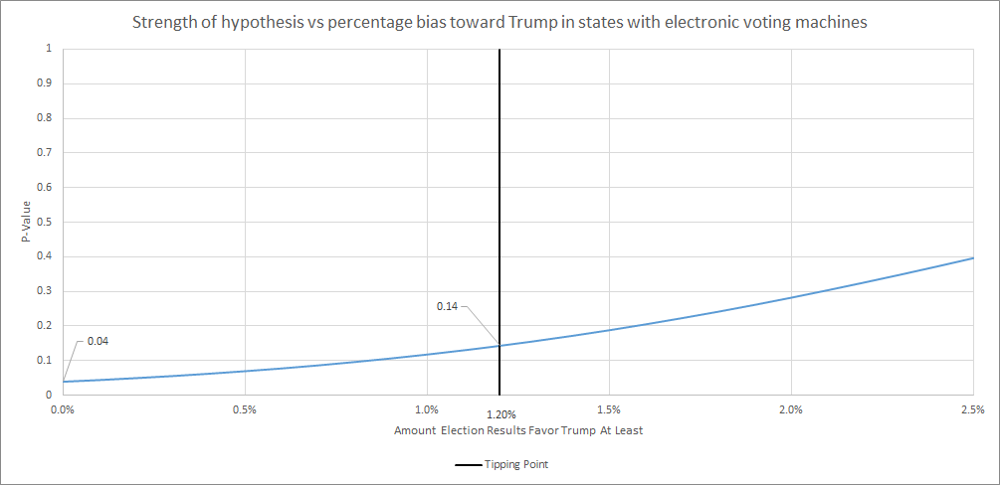

Abstract
Using CNN’s raw exit polls from 28 states and margin of error calculations from Theodore de Macedo Soares and TDMS Research, statistical analysis says that the average discrepancy between the exit polls and the election results in states with electronic voting machines is higher than for states that use mail-in or paper ballots. For electronic voting states the exit polls were inaccurate by an average of 4.7% versus 3.2% in states that use mail-in or paper ballots with a p-value of 0.07.
By itself that is significant but if a bias in favor of President Elect Donald Trump is assumed, states with electronic voting machines favored him when compared to exit polls by 4.3% versus 1.5% for states that use mail-in or paper ballots with a p-value of 0.04. The p-value for this margin to affect the outcome of the election is 0.14.
Overall, an explanation is needed as to why exit polls in states with electronic voting were significantly less accurate and significantly underestimated votes for Trump when compared to states with mail-in and paper ballots.
In order to compute the average discrepancy between exit polls and election results, each discrepancy was divided by their exit poll margin of error of the discrepancy. The average value of the discrepancy/MOE ratios for states with electronic voting was multiplied by the average value of the MOE for the same states. The same process was repeated for states voting by mail or paper ballot. The standard deviation for each set of discrepancy/MOE ratios was found and multiplied by the average MOE to find the standard error of the average discrepancy.
Positive values indicate the discrepancy is in Trump’s favor while negative values indicate the discrepancy is in Secretary Hillary Clinton’s favor.
| State | Voting Method | 95% MOE | Discrepancy | Discrepancy/MOE Ratio |
| Missouri | Electronic | 4.7 | 10.6 | 2.26 |
| North Carolina | Electronic | 3.0 | 5.7 | 1.89 |
| New Jersey | Electronic | 5.8 | 10.0 | 1.73 |
| Ohio | Electronic | 5.3 | 7.9 | 1.50 |
| Utah | Electronic | 5.7 | 8.7 | 1.52 |
| Pennsylvania | Electronic | 3.8 | 5.1 | 1.35 |
| Wisconsin | Electronic | 3.5 | 4.7 | 1.33 |
| South Carolina | Electronic | 4.9 | 6.8 | 1.38 |
| Indiana | Electronic | 4.5 | 4.6 | 1.02 |
| Georgia | Electronic | 3.7 | 3.8 | 1.02 |
| Nevada | Electronic | 3.8 | 3.5 | 0.92 |
| Florida | Electronic | 3.0 | 2.6 | 0.87 |
| Virginia | Electronic | 3.5 | 2.4 | 0.68 |
| Kentucky | Electronic | 5.7 | 3.3 | 0.59 |
| Texas | Electronic | 3.7 | -0.5 | -0.14 |
| Arizona | Electronic | 4.5 | 0.2 | 0.05 |
| Illinois | Electronic | 7.6 | -1.9 | -0.25 |
| California | Electronic | 3.7 | -1.9 | -0.51 |
| Maine | Paper | 5.0 | 8.3 | 1.66 |
| Iowa | Paper | 3.5 | 5.5 | 1.57 |
| New Hampshire | Paper | 4.6 | 4.9 | 1.07 |
| New Mexico | Paper | 4.6 | 1.9 | 0.41 |
| Oregon | Mail-in | 5.5 | 1.0 | 0.19 |
| Michigan | Paper | 3.6 | 0.2 | 0.06 |
| Colorado | Mail-in | 5.0 | 0.1 | 0.02 |
| Washington | Mail-in | 5.6 | -0.7 | -0.13 |
| Minnesota | Paper | 4.7 | -1.6 | -0.34 |
| New York | Paper | 5.1 | -6.7 | -1.30 |
When taking the average of the discrepancies, using their absolute values would assume no bias in the results:
| Avg Discrepancy/MOE Ratio | Avg MOE | Avg Discrepancy | Std Error | |
| Total | 0.92 | 4.56 | 4.19 | 2.95 |
| Electronic | 1.06 | 4.47 | 4.7 | 2.76 |
| Mail-in & Paper | 0.67 | 4.72 | 3.19 | 3.09 |
Here the averages are taken using the actual values, assuming a bias in the results for Trump.
| Avg Discrepancy/MOE Ratio | Avg MOE | Avg Discrepancy | Std Error | |
| Total | 0.79 | 4.56 | 3.32 | 3.93 |
| Electronic | 0.96 | 4.47 | 4.27 | 3.44 |
| Mail-in & Paper | 0.32 | 4.72 | 1.51 | 4.28 |
The p-values were calculated using a single-tailed two sample t-test with unequal variances. The p-value for affecting the outcome of the election was calculated by first finding the smallest percentage bias that would let Clinton win. If states with electronic voting machines were biased toward Trump by at least 1.2%, Clinton would have won Florida, Pennsylvania, Wisconsin and the presidency. The p-value was then recalculated using a null hypothesis that the difference is within 1.2%.

This analysis includes states that have backup paper ballots to their electronic voting system with the states that do not have backups. If elections were instead separated by ones that are verifiable (paper, mail-in, and electronic with paper backups) versus ones that are unverifiable (electronic without paper backups), the same trends are noticeable but much less pronounced. Without assuming bias, unverifiable and verifiable elections both were inaccurate by an average of 4.2%. Assuming a bias toward Trump, unverifiable elections had exit polls that were inaccurate by an average of 4.0% versus 2.9% in verifiable elections with a p-value of 0.14. The p-value for this margin to affect the election is 0.45.
Without bias assumed:
| Avg Discrepancy/MOE Ratio | Avg MOE | Avg Discrepancy | Std Error | |
| Unverifiable | 0.97 | 4.29 | 4.18 | 2.05 |
| Verifiable | 0.89 | 4.68 | 4.19 | 3.39 |
With bias assumed for Trump:
| Avg Discrepancy/MOE Ratio | Avg MOE | Avg Discrepancy | Std Error | |
| Unverifiable | 0.94 | 4.29 | 4.05 | 2.33 |
| Verifiable | 0.63 | 4.68 | 2.94 | 4.57 |
A difference in exit poll response rates for Trump supporters and Clinton supporters should not affect this analysis unless the difference is much higher in states with electronic voting machines versus those without.
For electronic voting states, some have paper precincts as well as electronic ones. If the percentage of precincts that have electronic voting machines in each state is known, it would add to this analysis.
Theodore De Macedo Soares. ”2016 Presidential Election Table.” TDMS Research. N.p., 10 Nov. 2016. Web. 16 Nov. 2016.
http://tdmsresearch.com/2016/11/10/2016-presidential-election-table/